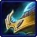
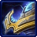

- Stats
- Abilities/Upgrades
- Strategy
- Lore
- Related
Armor: 1 |
 50/200 0.5625 per second
50/200 0.5625 per secondDamage: 6
Attacks: 1
Cooldown: 1
Targets: Ground and Air
Attack Range: 5
Acceleration: 1000
Collision Radius: 0.5
Requirements: Levels 2-3 requires Twilight Council
| Level |  Level 1 Level 1 |  Level 2 Level 2 |  Level 3 Level 3 |
| Minerals |  100 100 | 150 | 200 |
| Vespene Gas | 100 | 150 | 200 |
| Time |  160 160 | 190 | 220 |
| Damage Bonus | +1 | +2 | +3 |
| Total Damage | 7 | 8 | 9 |
50Vespene Cost: 100
Supply:
 2
2Produced From:Gateway/Warpgate Build Time:
37/5Warpgate Cooldown: 32
Requirements: Cybernetics Core
Warp Prism Size: 2
Unit Type: Light, Mechanical, Psionic, Ground
Requirements: Levels 2-3 requires Twilight Council
| Level |  Level 1 Level 1 |  Level 2 |  Level 3 |
| Minerals | 100 | 150 | 200 |
| Vespene Gas | 100 | 150 | 200 |
| Time | 160 | 190 | 220 |
| Armor Bonus | +1 | +2 | +3 |
| Total Armor | 2 | 3 | 4 |
Requirements: Levels 2-3 requires Twilight Council
| Level |  Level 1 Level 1 |  Level 2 Level 2 |  Level 3 Level 3 |
| Minerals | 150 | 225 | 300 |
| Vespene Gas | 150 | 225 | 300 |
| Time | 160 | 190 | 220 |
| Armor Bonus | +1 | +2 | +3 |
| Total Armor | 1 | 2 | 3 |
| Icon | Minerals | Vespene Gas | Research Time | Researched At |
| 0 | 0 | 0 | Already Researched |
Cooldown:
0Duration:
15Range: 9
Radius: 1.7
50Information: In order to use Force Field the user has to activate the spell, and then left click where to place it. When placing the ability, a graphic shows up to better represent where the ability will be, and allows for more precise placement.
The Force Field ability is one of the key parts of most any early game Protoss play. An example of this is in the early parts of Protoss versus Zerg, where the forcefield is useful to keep Zergs from running Zerglings into the Protoss base, or to split an attacking Zerg army into smaller armies to combat one at a time.
| Icon | Minerals | Vespene Gas | Research Time | Researched At |
| 0 | 0 | 0 | Already Researched |
Cooldown:
0Duration:
15Range: 0 (self)
Radius: 4
75Damage Reduction Bonus: 2
Information: Once this spell is activated, a 4 radius aura is projected from the sentry that gives an extra 2 damage reduction to any allied units in the area. The aura includes air units, and units above or below the same height of the sentry as long as they are in range.
This spell is the equivalent of having 2 extra armor on the units in the radius. This stacks with normal armor bonuses, but not with any other Guardian Shield spells. This means that a fully armored Zealot can have 6 armor while in a Guardian Shield. (1 base, 3 from upgrades, and 2 from the Guardian Shield)
| Icon | Minerals | Vespene Gas | Research Time | Researched At |
 | 100 | 100 | 80 | Cybernetics Core |
Cooldown:
0Duration:
60Range: 0 (self)
100Information: This spell allows the sentry to create fake versions of certain Protoss units. These units appear real to an enemy, but their disguise can be revealed with a detector. Hallucinations can not do damage when they attack, and receive double damage from all targets.
Certain hallucinations create multiple units. You receive four hallucinations for a Probe, two for Zealots, Stalkers, and High Templars, and only one for the rest.
If you have any suggestions for more strategies, go ahead and post on the forums 'here'!
Shift Queue Blinking
Sometimes when you have a large amount of stalkers, blinking can become more difficult and not all stalkers will end up where intended. A way to help this is to queue up a move command (to have the stalkers in range to blink), then the blink, and then another move command (to move the stalkers in front out of the way).
+1 Weapons vs Zerglings
Sum text about how gosu this is
+1 Weapons vs Zerglings
Sum text about how gosu this is
- Overview
Sentries are combat drones that are equipped with force field generators and holo-projectors. These deadly automatons are used to bolster the dwindling numbers of the protoss race, and to manipulate the outcome of major battles.
Sentries can deploy massive guardian shields that protect friendly units, and reduce the damage they take from ranged attacks. They can also project force field barriers to stall or split up opposing forces. Sentries also have the ability to create hallucinatory images that can draw enemy fire while a real protoss strike force maneuvers into position to deliver the killing blow.
{kind=link}
Source Information
Text information from the Battle.net Sentry page.
Photo 1 created by Medic-SP/Will. Copyright: Medic-SP/Will. Link to deviantart page.
| Protoss |
| Units |
| Nexus | Probe | Mothership |
| Gatway/Warpgate | Zealot | Stalker | Sentry | High Templar | Dark Templar | Archon |
| Robotics Facility | Observer | Immortal | Colossus | Warp Prism |
| Stargate | Phoenix | Void Ray | Carrier | Interceptor |
| Structures |
| Basic Buildings | Nexus | Pylon | Assimilator | Gateway/Warpgate | Forge | Photon Cannon |
| Advanced Buildings | Cybernetics Core | Robotics Facility | Twilight Council | Stargate |
| Top Tier Buildings | Robotics Bay | Templar Archives | Dark Shrine | Fleet Beacon |